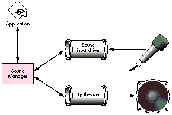

In system software version 6.0.7 and later, the Sound Manager has impressive sound
input and output capabilities that are largely untapped by the existing body of
application software. This article presents a code module called the Asynchronous
Sound Helper that's designed to make asynchronous sound input and output easily
accessible to the application programmer, yet provide an interface flexible enough to
facilitate extensive application features.
Of all the Managers inInside Macintosh, the Sound Manager may be the winner of the
Most Startling Metamorphosis contest. On the earliest Macintosh computers, sound was
produced by direct calls to a Sound Driver, as described inInside Macintosh Volume II.
Later, with the advent of system software version 4.1 and the more powerful
sound-generation hardware of the Macintosh SE and Macintosh II, the Sound Driver
was superseded by a fairly buggy initial implementation of the Sound Manager, which
was first documented inInside Macintosh Volume V. The new Sound Manager presented a
problem for developers, because there was a large installed base of Macintosh 128K,
512K, 512K enhanced, and Plus computers that didn't have the ROMs or system
software to support the Sound Manager. At this point, all but the heartiest developers
decided the tradeoffs for including sound in a non-sound-related application were too
severe.
By the time version 6.0.7 rolled around, many of the details of the Sound Manager had
changed, and sound input support was added. In fact, the Sound Manager in 6.0.7 and
System 7 is relatively stable. So if you've been waiting for the right moment to add
sound support to your application, the moment has arrived.
The Macintosh Sound Manager acts as a buffer between your application and the
complexities of the sound hardware (see Figure 1). Sounds are produced by
sendingsound commands to a sound channel . The sound channel sends the commands
through asynthesizer that knows how to control the audio hardware. Among the Sound
Manager's current 38 commands are operations such as playing simple frequencies,
playing complex recorded sounds, and changing sound volume. The Sound Manager also
allows you to record new sounds if the appropriate hardware is available. Recording is
performed through a sound input driver.

Figure 1The Sound Manager
Sound playback and recording through the Sound Manager can be
performedsynchronously or asynchronously . When you make a synchronous call to the
Sound Manager, the function doesn't return control to your application until the entire
operation (sound playback, for instance) is complete. In general, it's easy to use the
Sound Manager to play or record sound synchronously. Asynchronous calls return
control immediately to your application and perform their operations in the
background, which makes asynchronous operations somewhat trickier. Many
developers feel that there are too many details to make asynchronous sound worthwhile
in an application not specifically oriented toward sound. However, with sound input
devices becoming more common, the market impetus to add sound is growing.
This article presents the Asynchronous Sound Helper, a code module designed to take
much of the heartburn out of asynchronous sound input and output. The goals of Helper,
as we'll be calling it from now on, are threefold:
Helper provides two-tiered support--"easy" calls for basic operations and
"advanced" calls for more complex operations. You choose which calls to use depending
on your application's specific needs and user interface. For simple asynchronous
recording and playback, only a few routines are required. Or go all out and use Helper
routines to easily provide a "sound palette" with tape-deck-like controls for your
application.
To top it off, the overhead for Helper is fairly small. The code compiles to about 4K,
and it adds 86 bytes of global data to your application. At run time, it uses around 4K
in your application's heap. Helper uses clean Sound Manager techniques--nothing
skanky that might cause compatibility problems in the future.
First let's take a quick look at how Helper works and how your application uses it.
We'll leave the details for later.
Before you can use Helper you need to add a global Boolean flag to your application
--the attention flag. At initialization time, your application calls Helper's
initialization routine and provides theaddress of the attention flag. In its main event
loop, your application checks the value of the attention flag and, if true, calls Helper's
idle routine.
Because Helper's main function is to spawn asynchronous sound tasks, communication
between your application and Helper is carried out on an as-needed basis. Here are the
basic phases of communication for a typical sound playback sequence (the numbers
correspond to Figure 2).
Figure 2 Application-Sound Manager Interface
When your application terminates, it calls Helper's kill routine. Helper's method of
communication with the application minimizes processing overhead. By using the
attention flag scheme, your application calls Helper's idle routine only when it's
really necessary. This could be important in game and multimedia applications where
CPU bandwidth is pushed to the limit.
Now let's take a look at the interfaces and the basic uses of the routines provided by
Helper. Later we'll go into more detail about how the routines work and how to use
them.
INITIALIZATION, IDLE, AND TERMINATION
pascal OSErr SHInitSoundHelper(Boolean *attnFlag, short numChannels); pascal void SHIdle(void); pascal void SHKillSoundHelper(void);
SHInitSoundHelper initializes Helper. It allocates memory, so you should call it near
the beginning of your application. The application passes to SHInitSoundHelper the
address of the Boolean attention flag that Helper uses to inform the application when it
needs attention.
SHIdle performs various cleanup tasks. Call SHIdle when the attention flag goes true.
At application termination, call SHKillSoundHelper. It stops current recording and
playback and deallocates Helper's memory.
EASY SOUND OUTPUT
pascal OSErr SHPlayByID(short resID, long *refNum); pascal OSErr SHPlayByHandle(Handle sound, long *refNum); pascal OSErr SHPlayStop(long refNum); pascal OSErr SHPlayStopAll(void);
SHPlayByID and SHPlayByHandle provide an easy way to begin asynchronous sound
playback. These routines return a reference number via the refNum parameter. This
reference number can be used to stop playback and can be used with the advanced
routines described later. If you intend to simply trigger a sound that you want to run to
completion (like a gunshot sound in a game), you can pass nil for the refNum
parameter, thereby ignoring the reference number.
To stop a given sound or stop all playback, use SHPlayStop or SHPlayStopAll.
ADVANCED SOUND OUTPUT
pascal OSErr SHPlayPause(long refNum); pascal OSErr SHPlayContinue(long refNum); pascal SHPlayStat SHPlayStatus(long refNum); pascal OSErr SHGetChannel(long refNum, SndChannelPtr *channel);
If you want more control over the playback process, these routines will be of interest.
SHPlayPause pauses the playback of a sound, like the pause button on a tape deck.
SHPlayContinue continues playback of a sound that was previously paused. Use
SHPlayStatus to find out the status of a sound-- finished, playing, or paused. If you
want to send commands directly to a sound channel that was allocated by Helper, use
SHGetChannel. You might want to send sound commands in your application, for
example, to play continuous looped background music.
EASY SOUND INPUT
pascal OSErr SHRecordStart(short maxK, OSType quality,
Boolean *doneFlag);
pascal OSErr SHGetRecordedSound(Handle *theSound);
pascal OSErr SHRecordStop(void);
These are the three basic routines for recording sound through a sound input device. To
begin asynchronous sound recording, use SHRecordStart. The application passes the
address of a Boolean--a recording-completed flag--that tells the application when the
recording is complete. Once complete, the application calls SHGetRecordedSound to
retrieve a sound handle. The handle is suitable for playback with SHPlayByHandle or to
be written out as a 'snd ' resource. To stop recording immediately (as with the stop
button on a tape recorder), use SHRecordStop.
ADVANCED SOUND INPUT
pascal OSErr SHRecordPause(void); pascal OSErr SHRecordContinue(void); pascal OSErr SHRecordStatus(SHRecordStatusRec *recordStatus);
To pause recording, use SHRecordPause. To continue previously paused recording, use
SHRecordContinue. Use SHRecordStatus to get information about the status of
recording. This status information includes the current input level (which could be
used to draw a tape-deck-likelevel meter), the amount of sound that's been recorded
(with respect to the maximum), and whether the recording is finished, recording, or
paused.
Helper uses three internal data structures to keep track of recording and playback.
typedef struct {
SndChannel channel; // Our sound channel.
long refNum; // Our Helper reference number.
Handle sound; // The sound we're playing.
Fixed rate; // Sampled sound playback rate.
char handleState;// The handle state for this handle.
Boolean inUse; // Tells whether this SHOutRec is in use.
Boolean paused; // Tells whether this sound is paused.
} SHOutRec, *SHOutPtr;
The SHOutputVars record contains an array of SHOutRec records. The numOutRecs field
tells how many are in the array. These records, one for each allocated channel, hold
information about currently playing sounds. They're reused when sounds have
completed. The SHOutputVars record also keeps track of the next available output
reference number, in the field nextRef. The reference numbers are unique (modulo
2,147,483,647).
typedef struct {
long inRefNum; // Sound Manager's input device refNum.
SPB inPB; // The input parameter block.
Handle inHandle; // The handle we're recording into.
short headerLength; // The length of the sound's header.
Boolean recording; // Tells that we're actually recording.
Boolean recordComplete; // Tells that recording is complete.
OSErr recordErr; // Error, if error terminated recording.
short numChannels; // Number of channels for recording.
short sampleSize; // Sample size for recording.
Fixed sampleRate; // Sample rate for recording.
OSType compType; // Compression type for recording.
Boolean *appComplete; // Tells caller when recording is done.
Boolean paused; // Tells that recording has been paused.
} SHInputVars;
An SHOutRec record's first field, channel, contains the actual Sound Manager
SndChannel used to play the sound. The sound reference number associated with this
sound (the one passed back to the application) is stored in the refNum field. A handle to
the sound we're playing is stored in the sound field. The rate field holds the sample
playback rate of sampled sounds, which is used when pausing sampled sounds. The
handleState field contains the original handle state (derived via a call to SHGetState),
so Helper can reset the handle's state after playback is complete. The inUse field tells
whether a given SHOutRec is in use by a playing sound (as opposed to available for
reuse). Finally, the paused flag lets Helper remember when a sound has been paused.
typedef struct {
long inRefNum; // Sound Manager's input device refNum.
SPB inPB; // The input parameter block.
Handle inHandle; // The handle we're recording into.
short headerLength; // The length of the sound's header.
Boolean recording; // Tells that we're actually recording.
Boolean recordComplete; // Tells that recording is complete.
OSErr recordErr; // Error, if error terminated recording.
short numChannels; // Number of channels for recording.
short sampleSize; // Sample size for recording.
Fixed sampleRate; // Sample rate for recording.
OSType compType; // Compression type for recording.
Boolean *appComplete; // Tells caller when recording is done.
Boolean paused; // Tells that recording has been paused.
} SHInputVars;
The SHInputVars record contains information pertaining to a sound being recorded.
When the sound input device is opened, its reference number is stored in inRefNum.
The sound input parameter block, inPB, is part of SHInputVars. The sound being
recorded is stored in inHandle until complete. The recording flag tells whether we're
actually in the act of asynchronous recording, and the recordComplete flag (set by the
record completion routine, described later) tells us whenrecording has completed. If
an error occurs during recording, it's saved in recordErr so that it can be returned to
the application later, when it calls SHGetRecordedSound. The next four fields--
numChannels, sampleSize, sampleRate, and compType--hold information that's used to
construct the sound's header. The appComplete field points to a Boolean that the
application may optionally use to be informed of recording termination (the
application may use repeated calls to the SHRecordStatus routine instead). The paused
flag lets Helper keep track of when recording has been paused.
Helper declares its global storage as shown on the following page. As we go on, you'll
see the use of these globals in context, which will clarify their function.
static Boolean gsSHInited = false; // Has Helper been initialized?
static Boolean *gsSHNeedsTime; // Pointer to application's
// attention flag.
static SHOutputVarsgsSHOutVars; // Sound output variables.
static SHInputVarsgsSHInVars; // Sound input variables.
Helper uses twelve static utility routines to help it carry out its job. Many of these
routines are trivial, but let's go over a few of the more important ones in detail--
SHPlayCompletion, SHRecordCompletion, and SHOutRecFromRefNum.
When Helper performs asynchronous sound playback, it depends on a callback routine
that signals to the application that playback has completed. Here's the playback
callback routine, SHPlayCompletion:
pascal void SHPlayCompletion(SndChannelPtr channel,
SndCommand *command)
{
long otherA5;
// Look for our "callback signature" in the sound command.
if (command->param1 == kSHCompleteSig) {
otherA5 = SetA5(command->param2); // Set up our A5.
channel->userInfo = kSHComplete;
*gsSHNeedsTime = true;
// Tell application to give us an SHIdle call.
SetA5(otherA5); // Restore old A5.
}
}
When Helper begins the sound playback, it queues up a sound command-- a
callBackCmd--in the sound channel. The callBackCmd tells the Sound Manager to call
the callback routine, SHPlayCompletion. We place a verifiable "signature" in the sound
command record so that the application can verify that the call occurred as a result of
a specific callBackCmd, and not as a result of some spurious one. When such a blessed
callback occurs, Helper uses another handy value stuffed into the sound command--a
pointer to the A5 global world--to set up access to the globals. Helper then sets the
channel's userInfo field to a value that flags the sound as complete. Helper also sets
the application's attention flag so that later, in the main event loop, the application
sees that the attention flag is set and calls SHIdle. SHIdle then skips through the
SHOutRec array looking for sound channels that are in use and have kSHComplete in
their userInfo fields, and disposes of their sound channels. This is how Helper cleans
up after sound playback has completed.
Asynchronous sound recording also relies on a callback routine that signals when
recording has completed. Here's the callback routine, SHRecordCompletion:
pascal void SHRecordCompletion(SPBPtr inParams)
{
long otherA5;
otherA5 = SetA5(inParams->userLong); // Set up our A5.
*gsSHNeedsTime = true;
// Tell application to give us// an SHIdle call.
gsSHInVars.recordComplete = true; // Make a note to ourselves.
SetA5(otherA5); // Restore old A5.
}
When recording has completed (for any reason--we filled the entire buffer, an error
occurred, or the user manually stopped recording), the Sound Manager calls the
record callback routine. Like the playback callback routine, it first sets up the A5
world. Then it sets the application's attention flag and the recordComplete flag inside
the global SHInputVars structure. Later, the application will notice its attention flag is
set and call SHIdle. SHIdle checks the recordComplete flag and notices that recording is
complete, closes the sound input device, and prepares for the application to call
SHGetRecordedSound to retrieve the recorded sound. This is how Helper cleans up after
asynchronous sound recording.
Another heavily used static utility routine is SHOutRecFromRefNum. It maps a sound
reference number into a pointer to the appropriate SHOutRec.
SHOutPtr SHOutRecFromRefNum(long refNum)
{
short i;
// Search for the specified refNum.
for (i = 0; i < gsSHOutVars.numOutRecs; i++)
if (gsSHOutVars.outArray[i].inUse &&
gsSHOutVars.outArray[i].refNum == refNum)
break;
// If we found it, return a pointer to that record, otherwise
// nil.
if (i == gsSHOutVars.numOutRecs)
return(nil);
else return(&gsSHOutVars.outArray[i]);
}
SHOutRecFromRefNum simply does a linear search through the output records, looking
for a record that is in use and has a matching reference number. If none is found, nil is
returned.
We'll investigate a few more utility routines as we delve into the details of the public
routines in the sections that follow.
Let's take a closer look at the SHInitSoundHelper, SHKillSoundHelper, and SHIdle
routines.
SHINITSOUNDHELPER
pascal OSErr SHInitSoundHelper(Boolean *attnFlag, short numChannels)
{
OSErr err;
// Use default number of channels if zero was specified.
if (numChannels == 0)
numChannels = kSHDefChannels;
// Remember the address of the application's attention flag.
gsSHNeedsTime = attnFlag;
// Allocate the channels.
gsSHOutVars.numOutRecs = numChannels;
gsSHOutVars.outArray = (SHOutPtr)NewPtrClear(numChannels *
sizeof(SHOutRec));
// If successful, flag that we're initialized and exit.
if (gsSHOutVars.outArray != nil) {
gsSHInited = true;
return(noErr);
} else {
// Return some kind of error (MemError if there is one,
// otherwise make one up).
err = MemError();
if (err == noErr)
err = memFullErr;
return(err);
}
}
SHInitSoundHelper is fairly uncomplicated. The attnFlag parameter points to the
application's attention flag, which is used to tell the application that a call to SHIdle is
needed. The numChannels parameter tells Helper how many channels to allocate. The
number of simultaneous sounds that can be played back by Helper is limited by the
number of channels allocated (via numChannels) and the number of simultaneous
sound channels the Sound Manager allows. So use a numChannels that's appropriate to
your needs. If you specify zero, a reasonable default (four) is used.
SHInitSoundHelper allocates the output records and stores a pointer to the array in
gsSHOutVars. If the memory allocation is successful, gsSHInited is set to true.
SHKILLSOUNDHELPER
pascal void SHKillSoundHelper(void)
{
short i;
long timeout;
Boolean outputClean, inputClean;
if (!gsSHInited)
return;
SHPlayStopAll(); // Kill all playback.
SHRecordStop(); // Kill recording.
// Now sync-wait for everything to clean itself up.
timeout = TickCount() + kSHSyncWaitTimeout;
do {
if (*gsSHNeedsTime)
SHIdle(); // Clean up when required.
// Check whether all our output channels are cleaned up.
outputClean = true;
for (i = 0; i < gsSHOutVars.numOutRecs && outputClean; i++)
if (gsSHOutVars.outArray[i].inUse)
outputClean = false;
// Check whether our recording is cleaned up.
inputClean = !gsSHInVars.recording;
if (inputClean && outputClean)
break;
} while (TickCount() < timeout);
// Lose our preallocated sound channels.
DisposePtr((Ptr)gsSHOutVars.outArray);
}
SHKillSoundHelper first stops any asynchronous sound input or output in progress. It
waits for all the output channels to be free and for recording to stop before continuing.
Finally, it disposes of the output record array.
SHIDLE
pascal void SHIdle(void)
{
short i;
OSErr err;
long realSize;
// Immediately turn off the application's attention flag.
*gsSHNeedsTime = false;
// Do playback cleanup.
for (i = 0; i < gsSHOutVars.numOutRecs; i++)
if (gsSHOutVars.outArray[i].inUse &&
gsSHOutVars.outArray[i].channel.userInfo ==
kSHComplete)
// We've found a channel that needs closing.
SHReleaseOutRec(&gsSHOutVars.outArray[i]);
// Do recording cleanup.
if (gsSHInVars.recording && gsSHInVars.recordComplete) {
HUnlock(gsSHInVars.inHandle);
if (gsSHInVars.inPB.error &&
gsSHInVars.inPB.error != abortErr) {
// An error (other than a manual stop) occurred during
// recording. Kill the handle and save the error code.
gsSHInVars.recordErr = gsSHInVars.inPB.error;
DisposeHandle(gsSHInVars.inHandle);
gsSHInVars.inHandle = nil;
} else {
// Recording completed normally (which includes abortErr,
// the "error" that occurs when recording is stopped
// manually).
gsSHInVars.recordErr = noErr;
realSize = gsSHInVars.inPB.count +
gsSHInVars.headerLength;
err = SetupSndHeader(
gsSHInVars.inHandle, gsSHInVars.numChannels,
gsSHInVars.sampleRate, gsSHInVars.sampleSize,
gsSHInVars.compType, kSHBaseNote, realSize,
&gsSHInVars.headerLength);
SetHandleSize(gsSHInVars.inHandle, realSize);
}
// Error or not, close the recording device and tell the
// application that recording is complete through the
// recording-completed flag that the caller originally
// passed into SHRecordStart.
SPBCloseDevice(gsSHInVars.inRefNum);
gsSHInVars.recording = false;
gsSHInVars.inRefNum = 0;
if (gsSHInVars.appComplete != nil)
*gsSHInVars.appComplete = true;
}
}
}
SHIdle is one of the most important routines in Helper. It performs cleanup of
completed sound playback and recording. First SHIdle clears the application's attention
flag. For playback cleanup, it iterates through the output records looking for records
that have their inUse flag set and have kSHComplete in their sound channel's userInfo
field. These sounds have been flagged as completed by the callback routine. When such
an output record is found, its channel is closed with a call to SHReleaseOutRec.
void SHReleaseOutRec(SHOutPtr outRec)
{
short i;
Boolean found = false;
// An SHOutRec's inUse flag gets set only if SndNewChannel has
// been called on the record's sound channel. So if it's in use,
// we call SndDisposeChannel and ignore the error. (What else
// can we do?)
if (outRec->inUse)
SndDisposeChannel(&outRec->channel, kSHQuietNow);
// If this sound handle isn't being used by some other output
// record, kindly restore the original handle state.
if (outRec->sound != nil) {
for (i = 0; i < gsSHOutVars.numOutRecs && !found; i++)
if (&gsSHOutVars.outArray[i] != outRec &&
gsSHOutVars.outArray[i].inUse &&
gsSHOutVars.outArray[i].sound == outRec->sound)
found = true;
if (!found)
HSetState(outRec->sound, outRec->handleState);
}
outRec->inUse = false;
}
The SHReleaseOutRec routine has two important functions. First, it calls
SndDisposeChannel to free up the sound channel. Second, it restores the handle state of
the sound that was playing if that same sound isn't currently playing on some other
channel.
Recording cleanup is also performed back in SHIdle. If the recording flagand the
recordComplete flag are set, the record callback has informed Helper that recording is
complete. Right away, Helper unlocks the sound handle. Next Helper checks for errors.
If the application called SHRecordStop to manually stop recording before the buffer
was full, the error abortErr is generated. We don't really consider this an error, so
we expressly allow abortErr. If an error did occur, Helper saves the error code. This
way, later, when the application calls SHGetRecordedSound, Helper can return an
appropriate OSErr. If no error occurred, Helper calculates the actual size of the
sampled sound and builds an appropriate sound header, including the correct length.
After checking for errors, Helper resizes the handle to exactly the size it should be.
Then it calls SPBCloseDevice to close the sound input device, clears the recording flag,
and sets the application's recording-completed flag, if one was provided.
As you can see, it's important to call SHIdle when the attention flag goes true;
otherwise subsequent requests for playback or recording may fail.
Now we'll look more closely at Helper's easy playback routines, SHPlayByID,
SHPlayByHandle, SHPlayStop, and SHPlayStopAll.
SHPLAYBYID AND SHPLAYBYHANDLE
pascal OSErr SHPlayByID(short resID, long *refNum)
{
Handle sound;
char oldHandleState;
short ref;
OSErr err;
SHOutPtr outRec;
// First, try to get the caller's 'snd ' resource.
sound = GetResource(soundListRsrc, resID);
if (sound == nil) {
err = ResError();
if (err == noErr)
err = resNotFound;
return(err);
}
oldHandleState = SHGetState(sound);
HNoPurge(sound);
// Now let's get a reference number and an output record.
ref = SHNewRefNum();
err = SHNewOutRec(&outRec);
if (err != noErr) {
HSetState(sound, oldHandleState);
return(err);
}
// Now let's fill in the output record. This routine also
// initializes the sound channel and flags outRec as "in use."
err = SHInitOutRec(outRec, ref, sound, oldHandleState);
if (err != noErr) {
HSetState(sound, oldHandleState);
SHReleaseOutRec(outRec);
return(err);
}
// We're in pretty good shape. We've got a reference number, an
// initialized output record, and the sound handle. Let's party.
MoveHHi(sound);
HLock(sound);
err = SHBeginPlayback(outRec);
if (err != noErr) {
HSetState(sound, oldHandleState);
SHReleaseOutRec(outRec);
return(err);
} else {
if (refNum != nil) // refNum is optional--the caller may not
*refNum = ref; // want it.
return(noErr);
}
}
SHPlayByID starts asynchronous playback of the 'snd ' resource with ID resID. First
the resource is loaded and set to be nonpurgeable. Notice the call to SHGetState. This
utility routine searches the output record array looking for the given sound handle in
some output record that's flagged as inUse. If the handle is found, SHGetState returns
the handle state that's stored in the output record. If the sound handle isn't found, the
function returns HGetState(sound). See "Why SHGetState?" for details on why this is
necessary. Then SHPlayByID calls SHNewRefNum to get the next consecutive sound
reference number, and SHNewOutRec to find the first available output record in the
list. Next, SHPlayByID calls SHInitOutRec to fill out the output record.
OSErr SHInitOutRec(SHOutPtr outRec, long refNum, Handle sound,
char handleState)
{
short i;
OSErr err;
SndChannelPtr channel;
// Initialize the sound channel inside outRec. Clear the bytes to
// zero, install the proper queue size, and then call
// SndNewChannel.
for (i = 0; i < sizeof(SndChannel); i++)
((char *)&outRec->channel)[i] = 0;
outRec->channel.qLength = stdQLength;
channel = &outRec->channel;
err = SndNewChannel(&channel, kSHNoSynth, kSHNoInit,
(SndCallBackProcPtr)SHPlayCompletion);
if (err != noErr)
return(err);
// Initialize the rest of the record and return noErr. Note that
// we set the record's inUse flag only if the SndNewChannel call
// was successful.
outRec->refNum = refNum;
outRec->sound = sound;
outRec->rate = 0;
outRec->handleState = handleState;
outRec->inUse = true;
outRec->paused = false;
return(noErr);
}
The SHInitOutRec routine calls SndNewChannel to open the sound channel that's
associated with this output record. The constant kSHNoSynth is passed as the
synthesizer and kSHNoInit is passed as the synthesizer initializer value. These values
are passed because Helper doesn't have any idea what kind of sound will be played on
this channel, so it must assume nothing. (See "Types of Sound" for an overview of the
different synthesizers.) SHInitOutRec also passes the address of the playback
completion routine, SHPlayCompletion, to SndNewChannel. If successful, the rest of
the output record is filled out and the output record's inUse flag is set.
If the SHInitOutRec call is successful, SHPlayByID moves the handle high in the heap,
locks it, and begins playback with a call to SHBeginPlayback.
OSErr SHBeginPlayback(SHOutPtr outRec)
{
OSErr err;
// First, initiate playback. If an error occurs, return it
// immediately.
err = SndPlay(&outRec->channel, outRec->sound, kSHAsync);
if (err != noErr)
return(err);
// Playback started OK. Let's queue up a callback command so that
// we'll know when the sound is finished.
SHQueueCallback(&outRec->channel);
// Ignore error. (What can we do?)
return(noErr);
}
The SHBeginPlayback routine calls SndPlay to start the sound playing asynchronously,
passing as parameters the sound handle and the flag kSHAsync. Since the only way to
tell that an asynchronous sound has completed is via a callback, Helper must queue up
a callBackCmd after beginning playback. This is done with a call to SHQueueCallback.
Finally, SHPlayByID returns the sound reference number, if the application wants it.
(You can pass nil if you don't care about the reference number.)
The SHPlayByHandle routine is similar to SHPlayByID, except that it supports a
special case: you can pass SHPlayByHandle a nil handle. This means "go ahead and open
a sound channel, but don't call SndPlay." Normally an application that does this
subsequently calls SHGetChannel to retrieve the sound channel pointer and sends sound
commands directly to the channel itself. This is covered in more detail later in the
section "Advanced Playback Routines."
SHPLAYSTOP AND SHPLAYSTOPALL
pascal OSErr SHPlayStopAll(void)
{
short i;
// Look for output records that are in use and stop their
// playback with SHPlayStopByRec.
for (i = 0; i < gsSHOutVars.numOutRecs; i++)
if (gsSHOutVars.outArray[i].inUse)
SHPlayStopByRec(&gsSHOutVars.outArray[i]);
return(noErr);
}
SHPlayStop stops playback of a given sound by looking up the reference number. The
routine tries to find the output record associated with refNum by a call to
SHOutRecFromRefNum. If one is found, SHPlayStop calls SHPlayStopByRec to do the
actual work.
pascal OSErr SHPlayStopAll(void)
{
short i;
// Look for output records that are in use and stop their
// playback with SHPlayStopByRec.
for (i = 0; i < gsSHOutVars.numOutRecs; i++)
if (gsSHOutVars.outArray[i].inUse)
SHPlayStopByRec(&gsSHOutVars.outArray[i]);
return(noErr);
}
SHPlayStopAll is not much different, but instead of looking up a reference number, it
calls SHPlayStopByRec on all output records that have their inUse flag set. Let's take a
look at SHPlayStopByRec.
void SHPlayStopByRec(SHOutPtr outRec)
{
SndCommand cmd;
// Dump the rest of the commands in the queue (including our
// callBackCmd).
cmd.cmd = flushCmd;
cmd.param1 = 0;
cmd.param2 = 0;
SndDoImmediate(&outRec->channel, &cmd);
// Shut up and go to your room! No dessert for you, little boy.
cmd.cmd = quietCmd;
cmd.param1 = 0;
cmd.param2 = 0;
SndDoImmediate(&outRec->channel, &cmd);
// It's now safe to manually dump our channel (we'll just skip
// the whole callback thing in this case).
SHReleaseOutRec(outRec);
}
To stop a playing sound, Helper sends a flushCmd, which flushes all subsequent
(currently unprocessed) sound commands from a channel's queue, and a quietCmd,
which tells the channel to stop making sound. The flushCmd also flushes the
callBackCmd we previously queued up. After these two commands, we can safely call
SHReleaseOutRec to dispose of the sound channel for the sound.
Now that we've seen the basic stuff, on to the advanced sound output routines.
Helper's easy calls are enough to satisfy the demands of many applications. If finer
control is desired, a few other playback routines can be used. Let's take a closer look at
the advanced playback routines, SHPlayPause, SHPlayContinue, SHPlayStatus, and
SHGetChannel.
SHPLAYPAUSE
pascal OSErr SHPlayPause(long refNum)
{
SHOutPtr outRec;
SndCommand cmd;
OSErr err;
outRec = SHOutRecFromRefNum(refNum);
if (outRec != nil) {
// Don't bother with this if we're already paused.
if (outRec->paused)
return(kSHErrAlreadyPaused);
// Get the current playback rate for this sound.
cmd.cmd = getRateCmd;
cmd.param1 = 0;
cmd.param2 = &outRec->rate;
err = SndDoImmediate(&outRec->channel, &cmd);
if (err != noErr)
return(err);
// Now pause with either a rateCmd or a pauseCmd, as
// appropriate.
cmd.param1 = 0;
cmd.param2 = 0;
if (outRec->rate != 0) {
// If we get something nonzero, it's safe to assume that
// whatever synthesizer we're talking to will be able to
// understand a rateCmd to restore the rate (probably the
// sampled synthesizer). To pause the sound, we'll set
// the rate to zero.
cmd.cmd = rateCmd;
err = SndDoImmediate(&outRec->channel, &cmd);
if (err != noErr)
return(err);
} else {
// This synthesizer doesn't understand rateCmds. So
// instead we'll just pause command queue processing with
// a pauseCmd. This is how we pause command-type sounds
// (e.g., Simple Beep).
cmd.cmd = pauseCmd;
err = SndDoImmediate(&outRec->channel, &cmd);
if (err != noErr)
return(err);
}
outRec->paused = true;
return(noErr);
} else return(kSHErrBadRefNum);
}
There are two basic methods of pausing a sound: one uses a pauseCmd, the other uses a
rateCmd. Sounds that are composed of a lot of little sound commands (like Simple
Beep) are paused by pausing command-queue processing with a pauseCmd. Most
sampled sounds, however, have only one command, a bufferCmd, which plays the
sampled sound. A pauseCmd is ineffective for this type of sound because it pauses
command-queue processing after the completion of the bufferCmd; in essence, the
sound plays to completion before pausing. Therefore, a different approach is taken
with sampled sounds: a rateCmd is used to set the sample playback rate to 0.0,
effectively stopping the bufferCmd in its tracks.
SHPlayPause first retrieves the output record associated with the given refNum, and
then checks that the sound is not already paused. SHPlayPause then sends a getRateCmd
to establish the current playback rate of the sound. If getRateCmd returns a nonzero
rate, SHPlayPause knows that a rateCmd can be used to pause the sound; otherwise a
pauseCmd is used. Either way, SHPlayPause sets the paused flag in the output record.
SHPLAYCONTINUE
pascal OSErr SHPlayContinue(long refNum)
{
SHOutPtr outRec;
SndCommand cmd;
OSErr err;
outRec = SHOutRecFromRefNum(refNum);
if (outRec != nil) {
// Don't even bother with this stuff if the channel isn't
// paused.
if (!outRec->paused)
return(kSHErrAlreadyContinued);
// Now continue playback with a rateCmd or a resumeCmd, as
// appropriate.
cmd.param1 = 0;
if (outRec->rate != 0) {
// Resume sampled sound playback by restoring the
// synthesizer's playback rate with a rateCmd.
cmd.cmd = rateCmd;
cmd.param2 = outRec->rate;
err = SndDoImmediate(&outRec->channel, &cmd);
if (err != noErr)
return(err);
} else {
// Resume sound queue processing with a resumeCmd.
cmd.cmd = resumeCmd;
cmd.param2 = 0;
err = SndDoImmediate(&outRec->channel, &cmd);
if (err != noErr)
return(err);
}
outRec->paused = false;
return(noErr);
} else return(kSHErrBadRefNum);
}
SHPlayContinue continues the playback of a previously paused sound, checking
whether there's a nonzero rate in the output record. This is the indicator of whether to
send a resumeCmd or rateCmd. If the rate is zero, SHPlayContinue sends a resumeCmd
to resume the sound. If the rate is nonzero, SHPlayContinue sends a rateCmd to restore
the sample playback rate for the sound.
SHPLAYSTATUS
pascal SHPlayStat SHPlayStatus(long refNum)
{
SHOutPtr outRec;
if (refNum >= gsSHOutVars.nextRef)
return(shpError);
else {
outRec = SHOutRecFromRefNum(refNum);
if (outRec != nil) {
// We found an SHOutRec for the refNum (so it's in use).
return((outRec->paused) ? shpPaused : shpPlaying);
} else {
// Although we've used the reference number in the past,
// it's not in use, so we can assume whatever sound it
// was associated with has stopped. Therefore, we'll
// return shpFinished.
return(shpFinished);
}
}
}
SHPlayStatus returns status information about a given sound, by reference number.
The SHPlayStat enum looks like this:
typedef enum {
shpError = -1,
shpFinished = 0,
shpPaused = 1,
shpPlaying = 2
} SHPlayStat;
SHPlayStatus uses the fact that sound reference numbers are sequential and unique to
infer the status of a sound, even if its record is no longer in the output record array. If
refNum is greater than the next available reference number, SHPlayStatus returns
shpError, since refNum is invalid. If refNum can be found in the output record list,
SHPlayStatus returns shpPlaying or shpPaused, depending on the state of the output
record's paused flag. And finally, if refNum is not in use by an existing output record
but has been used in the past, it's safe to assume that playback has completed for that
reference number, and SHPlayStatus returns shpFinished.
SHGETCHANNEL
Finally, there's SHGetChannel. This routine allows you to use Helper to do sound
channel management but retain the ability to send sound commands to the channel
yourself. This is most commonly done to play looped continuous music in the
background.
To use Helper to play looped continuous music, the application calls the
SHPlayByHandle routine with nil as the sound handle. This tells Helper to open the
channel without a subsequent call to SndPlay. Then the application calls SHGetChannel
to retrieve a pointer to the sound channel that Helper has set up. The application loads
a sound resource containing a soundCmd, which installs a sampled sound as a voice. It
plays this sound in the channel with a call to SndPlay, then issues a freqCmd to start it
playing indefinitely. The demonstration program SHDemo provided on theDeveloper CD
Series disc gives a specific example of this technique.
pascal OSErr SHGetChannel(long refNum, SndChannelPtr *channel)
{
SHOutPtr outRec;
// Look for the output record associated with refNum.
outRec = SHOutRecFromRefNum(refNum);
// If we found one, return a pointer to the sound channel.
if (outRec != nil) {
*channel = &outRec->channel;
return(noErr);
} else return(kSHErrBadRefNum);
}
SHGetChannel simply searches for the output record associated with refNum. If one is
found, a pointer to the sound channel is returned via the channel parameter.
Helper provides routines to simplify the process of asynchronous sound recording.
Most applications' needs will be satisfied by the three easy routines, SHRecordStart,
SHGetRecordedSound, and SHRecordStop.
pascal OSErr SHRecordStart(short maxK, OSType quality,
Boolean *doneFlag)
{
Boolean deviceOpened = false;
Boolean allocated = false;
OSErr err;
short canDoAsync;
short metering;
long allocSize;
// 1. Try to open the current sound input device.
err = SPBOpenDevice(nil, siWritePermission,
&gsSHInVars.inRefNum);
if (err == noErr)
deviceOpened = true;
// 2. Now let's see if this device can handle asynchronous
// recording.
if (err == noErr) {
err = SPBGetDeviceInfo(gsSHInVars.inRefNum, siAsync,
(Ptr)&canDoAsync);
if (err == noErr && !canDoAsync)
err = kSHErrNonAsyncDevice;
}
// 3. Try to allocate memory for the application's sound.
if (err == noErr) {
allocSize = (maxK * 1024) + kSHHeaderSlop;
gsSHInVars.inHandle = NewHandle(allocSize);
if (gsSHInVars.inHandle == nil) {
err = MemError();
if (err == noErr)
err = memFullErr;
}
if (err == noErr)
allocated = true;
}
// 4. Set up various recording parameters (metering and quality).
if (err == noErr) {
metering = 1;
SPBSetDeviceInfo(gsSHInVars.inRefNum, siLevelMeterOnOff,
(Ptr)&metering);
err = SPBSetDeviceInfo(gsSHInVars.inRefNum,
siRecordingQuality, (Ptr)&quality);
}
// 5. Call SHGetDeviceSettings to determine a bunch of
// information we'll need to make a header for this sound.
if (err == noErr) {
err = SHGetDeviceSettings(gsSHInVars.inRefNum,
&gsSHInVars.numChannels, &gsSHInVars.sampleRate,
&gsSHInVars.sampleSize, &gsSHInVars.compType);
}
// 6. Create a header for this sound.
if (err == noErr) {
err = SetupSndHeader(gsSHInVars.inHandle,
gsSHInVars.numChannels, gsSHInVars.sampleRate,
gsSHInVars.sampleSize, gsSHInVars.compType,
kSHBaseNote, allocSize, &gsSHInVars.headerLength);
}
// 7. Lock the input sound handle and set up the input parameter
// block.
if (err == noErr) {
MoveHHi(gsSHInVars.inHandle);
HLock(gsSHInVars.inHandle);
allocSize -= gsSHInVars.headerLength;
gsSHInVars.inPB.inRefNum = gsSHInVars.inRefNum;
gsSHInVars.inPB.count = allocSize;
gsSHInVars.inPB.milliseconds = 0;
gsSHInVars.inPB.bufferLength = allocSize;
gsSHInVars.inPB.bufferPtr = *gsSHInVars.inHandle +
gsSHInVars.headerLength;
gsSHInVars.inPB.completionRoutine =
(ProcPtr)SHRecordCompletion;
gsSHInVars.inPB.interruptRoutine = nil;
gsSHInVars.inPB.userLong = SetCurrentA5();
// For our completion routine.
gsSHInVars.inPB.error = noErr;
gsSHInVars.inPB.unused1 = 0;
err = noErr;
}
// 8. Finally, if all went well, set our recording flag, make
// sure our recording-completed flag is clear, and initiate
// asynchronous recording.
if (err == noErr) {
gsSHInVars.recording = true;
gsSHInVars.recordComplete = false;
gsSHInVars.appComplete = doneFlag;
gsSHInVars.paused = false;
if (gsSHInVars.appComplete != nil)
*gsSHInVars.appComplete = false;
err = SPBRecord(&gsSHInVars.inPB, kSHAsync);
}
// 9. Now clean up any errors that might have occurred.
if (err != noErr) {
gsSHInVars.recording = false;
if (deviceOpened)
SPBCloseDevice(gsSHInVars.inRefNum);
if (allocated) {
DisposeHandle(gsSHInVars.inHandle);
gsSHInVars.inHandle = nil;
}
}
return(err);
}
This routine, the most lengthy in Helper, is staged, and nearly every stage can fail.
Each stage does its function and sets err to some error code. Subsequent stages execute
only if the result of the previous stage was noErr. Significant stages (like opening the
sound input device and memory allocation) set flags that allow SHRecordStart to clean
up if an error occurs after one of those operations.
The first stage tries to open the sound input device with SPBOpenDevice. The device's
reference number is stored in the inRefNum field of the input variables record. The
second stage tests the device to see if it can handle asynchronous recording. The third
stage attempts to allocate the memory buffer for the recorded sound based on the
parameter maxK.
The fourth stage turns on metering (which allows Helper to retrieve the instantaneous
record level) and sets the recording quality based on the quality parameter (the Sound
Manager recording values-- 'good', 'betr', or 'best'). The fifth stage retrieves device
settings that Helper uses to construct the sound header. The sixth stage actually creates
the header with a call to the Sound Manager routine SetupSndHeader.
The seventh stage moves the recording handle high in the heap and locks it in
preparation for recording. SHRecordStart then sets up inPB, the sound input
parameter block, in preparation for recording. Finally, the eighth stage flags that
recording is under way, clears the application's recording-completed flag, and then
initiates recording with a call to SPBRecord. If some failure occurred, the sound
handle is deallocated if necessary, and the sound input device is closed if it was opened.
SHGETRECORDEDSOUND
pascal OSErr SHGetRecordedSound(Handle *theSound)
{
if (gsSHInVars.recordComplete) {
if (gsSHInVars.recordErr != noErr) {
*theSound = nil;
return(gsSHInVars.recordErr);
} else {
*theSound = gsSHInVars.inHandle;
return(noErr);
}
} else {
*theSound = nil;
return(kSHErrNoRecording);
}
}
SHGetRecordedSound is used by the application to retrieve the handle of a sound that
has finished recording. Once the application's recording-completed flag goes true (or
SHRecordStatus indicates "finished") it's OK to call SHGetRecordedSound. If an error
terminated recording, SHGetRecordedSound returns the error. If no error occurred,
theSound is set as a handle to therecorded sound. The recorded sound can be played back
with the Sound Manager or any of Helper's playback routines, or can be written out as
a 'snd ' resource.
SHRECORDSTOP
pascal OSErr SHRecordStop(void)
{
if (gsSHInVars.recording)
return(SPBStopRecording(gsSHInVars.inRefNum));
}
SHRecordStop stops recording like the stop button on a tape deck. If recording was
stopped before the entire input buffer was filled, SHIdle will shorten the sound handle
to the correct size.
Three advanced routines give you more control over the recording process.
SHRecordPause and SHRecordContinue pause and continue recording. SHRecordStatus
returns status information about a recording sound, as well as its progress (how much
has been recorded with respect to the total space that has been allocated) and the
instantaneous input level.
SHRECORDPAUSE AND SHRECORDCONTINUE
pascal OSErr SHRecordPause(void)
{
OSErr err;
if (gsSHInVars.recording) {
if (!gsSHInVars.paused) {
err = SPBPauseRecording(gsSHInVars.inRefNum);
gsSHInVars.paused = (err == noErr);
return(err);
} else return(kSHErrAlreadyPaused);
} else return(kSHErrNotRecording);
}
SHRecordPause simply pauses recording with the routine SPBPauseRecording,
assuming the recording is not already paused.
pascal OSErr SHRecordContinue(void)
{
OSErr err;
if (gsSHInVars.recording) {
if (gsSHInVars.paused) {
err = SPBResumeRecording(gsSHInVars.inRefNum);
gsSHInVars.paused = !(err == noErr);
return(err);
} else return(kSHErrAlreadyContinued);
} else return(kSHErrNotRecording);
}
SHRecordContinue resumes recording of a previously paused recording with the
routine SPBResumeRecording.
SHRECORDSTATUS
SHRecordStatus uses an SHRecordStatusRec record to provide detailed information
about the progress of a sound while it's being recorded.
typedef struct {
SHRecordStat recordStatus; // Current recording status.
unsigned long totalRecordTime;
// Total (maximum) record time in ms.
unsigned long currentRecordTime // Current recorded time in ms.
short meterLevel;
// 0..255, the current input level.
} SHRecordStatusRec;
pascal OSErr SHRecordStatus(SHRecordStatusRec *recordStatus)
{
short recStatus;
OSErr err;
unsigned long totalSamplesToRecord, numberOfSamplesRecorded;
if (gsSHInVars.recording) {
err = SPBGetRecordingStatus(gsSHInVars.inRefNum, &recStatus,
&recordStatus->meterLevel, &totalSamplesToRecord,
&numberOfSamplesRecorded,
&recordStatus->totalRecordTime,
&recordStatus->currentRecordTime);
if (err == noErr)
recordStatus->recordStatus =
(gsSHInVars.paused ? shrPaused : shrRecording);
else recordStatus->recordStatus = shrError;
return(err);
} else if (gsSHInVars.recordComplete) {
recordStatus->recordStatus = shrFinished;
recordStatus->meterLevel = 0;
// Don't know about the other fields--just leave 'em.
return(noErr);
} else return(kSHErrNotRecording);
}
An SHRecordStatusRec record contains a recordStatus field that's analogous to the
playback status. SHRecordStatus calls SPBGetRecordingStatus to get status
information from the Sound Manager. The meter level, total record time, and current
record time are placed directly in the output record.
The SHRecordStat enum looks like this:
typedef enum {
shrError = -1,
shrFinished = 0,
shrPaused = 1,
shrRecording = 2
} SHRecordStat;
The recording status is set to shrError if an error occurred on the
SPBGetRecordingStatus call, shrFinished if the recordComplete flag is set,
shrRecording if the sound is currently recording, or shrPaused if the sound is
recording but is paused. The information in an SHRecordStatusRec, along with the
other routines described in this article, is enough to support an on-screen tape deck.
The best way to get a feeling for how to use Helper is to look over the source code for
the small demonstration program, SHDemo, on the CD. It demonstrates triggered
sounds using SHPlayByID; continuous background music using SHPlayByHandle and
SHGetChannel; and a mini tape deck with a level meter, progress bar, and record, stop,
play, and pause buttons that work for both recording and playback. SHDemo exercises
all of Helper's calls, so you're likely to find appropriate examples somewhere inside
SHDemo. For a practical example of what Helper can do, take a look at the RapMaster
application on the CD.
Consider how sound, as a data type, might fit into and enhance your application. You'll
still need to implement the user interface, but Helper can shield you from many of the
ugly Sound Manager details described above, and can also form the basis for a
customized sound package better suited to the specific needs of your application. Either
way, join the Noisy Revolution today!
SHGetState is necessary because your application might trigger the same sound handle
twice, the second time while the first is still playing. If SHPlayByID used only
HGetState, here's what would happen:
We're left with the sound handle in the wrong state. So instead of HGetState,
SHPlayByID uses SHGetState. SHGetState looks to see if the sound has already been
triggered, and if so, returns the state stored in the previous trigger's output record.
Also, SHReleaseOutRec doesn't reset the handle's state if the sound handle is found to be
currently playing on some other channel.
The Sound Manager supports three basic types of sound. First is simple square-wave
synthesis . You can specify the amplitude (volume), frequency (pitch), approximate
timbre, and duration of sounds for a square-wave synthesizer with the Sound Manager
commands ampCmd, timbreCmd, and freqDurationCmd.
The second type of sound is wave-table synthesis , which allows you to specify a
waveform as 512 samples . These samples specify the relative output voltage over
time for one period of the waveform. Sounds with more complex timbre can be created
using a wave-table synthesizer. You control the frequency and amplitude of wave-table
sound in the same way as square-wave sound.
The most interesting sounds can be produced via the third type-- sampled synthesis .
Sampled sounds are a continuous list of relative voltages over time that allow the
Sound Manager to reconstruct an arbitrary analog waveform. This could be a recording
of music, your voice --anything.
Helper allows you to easily play any of these types of sound asynchronously.
QUALITY OF SAMPLED SOUND
Two basic characteristics affect the quality of sampled sound: sample rate and sample
size.
Sample rate, or the rate at which voltage samples are taken, determines the highest
possible frequency that can be recorded. Specifically, for a given sample rate, you can
sample sounds of up to half that frequency. For instance, if the sample rate is 22,254
samples per second (hertz, or Hz), the highest frequency you could record would be
around 11,000 Hz.
A commercial compact disc is sampled at 44,100 samples per second, providing a
frequency response of up to around 20,000 Hz, the limit of human hearing. Your dog,
however, may find your CD player a bit wanting.
Sample size, or quantization, determines the dynamic range of the recording (the
difference between the quietest and the loudest sound). If the sample size is eight bits,
there are 256 discrete voltage levels that can be recorded. This provides
approximately 48 decibels (dB) of dynamic range. A CD's sample size is 16 bits,
which provides about 96 dB of dynamic range. Humans with good hearing are sensitive
to ranges greater than 100 dB, so you're likely to see 18- or 20-bit digital audio in
the next ten years.
BRYAN K. ("BEAKER") RESSLER (AppleLink: ADOBE.BEAKER) Looking back, it
seems clear that Bryan sacrificed quality time with his wife during the writing of this
article. So, in the spirit of fairness, develop asked Bryan's wife, Nicole, to contribute
the bio for her husband. Here it is: "I owe it all to my wife, without whom I wouldn't be
the man I am today. The End."*
Helper is written in C, but all public routines are declared as Pascal so that they
can be called from other languages. *
A note to MacApp users: Set PermAllocation to true before calling
SHInitSoundHelper; otherwise the outArray pointer may be allocated from temporary
storage.*
A note to MacApp users: You should set PermAllocation to true before calling
SHRecordStart; otherwise the sound input handle may be allocated from temporary
storage. *
THANKS TO OUR TECHNICAL REVIEWERS Rich Collyer, Neil Day, Kip Olson, Jim
Reekes *